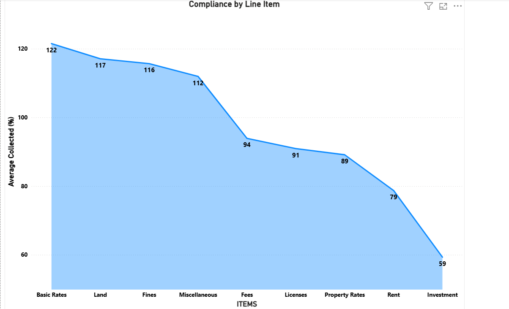
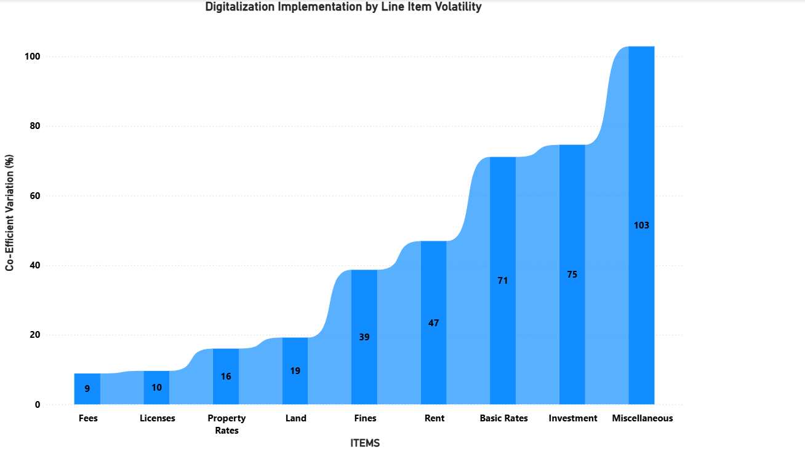
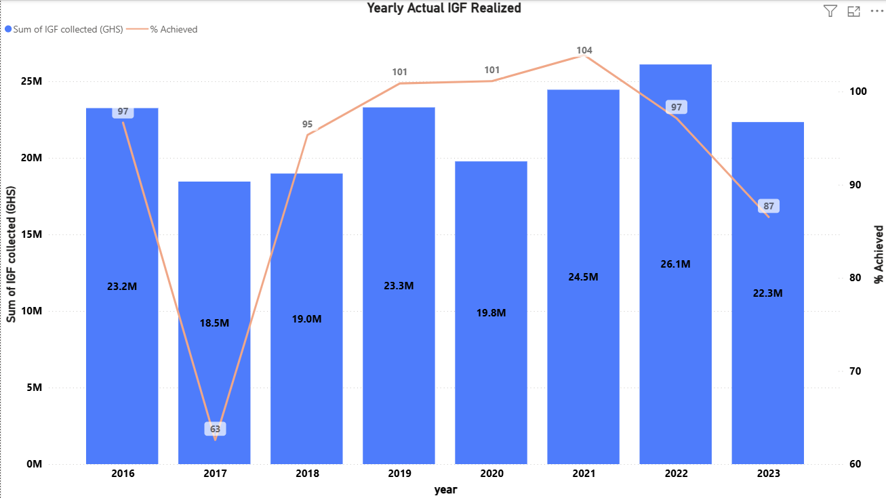
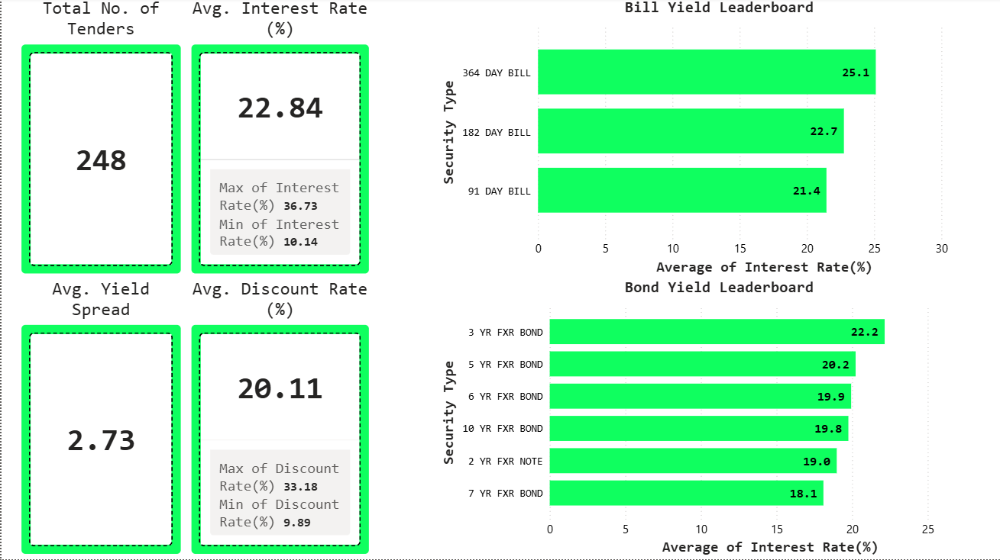
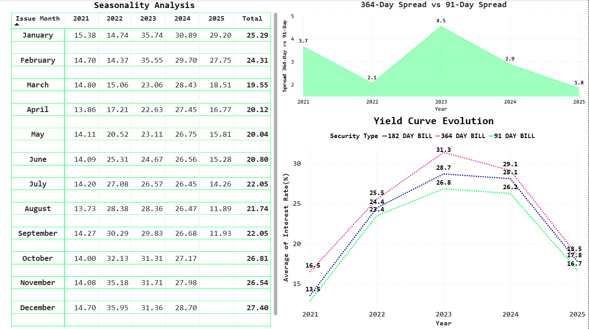
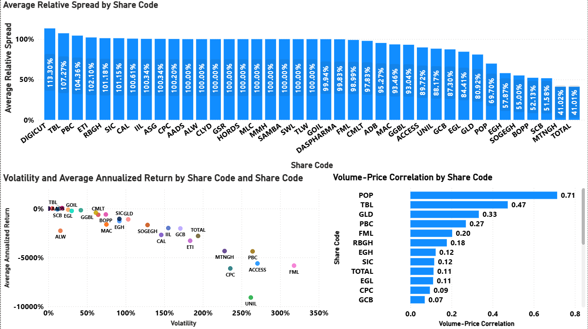
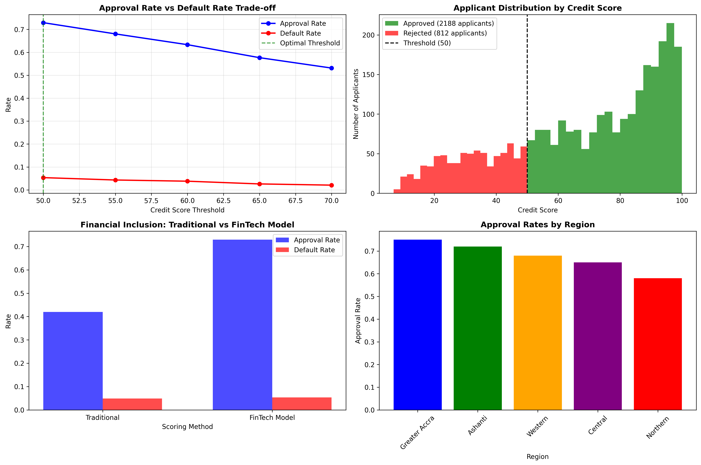
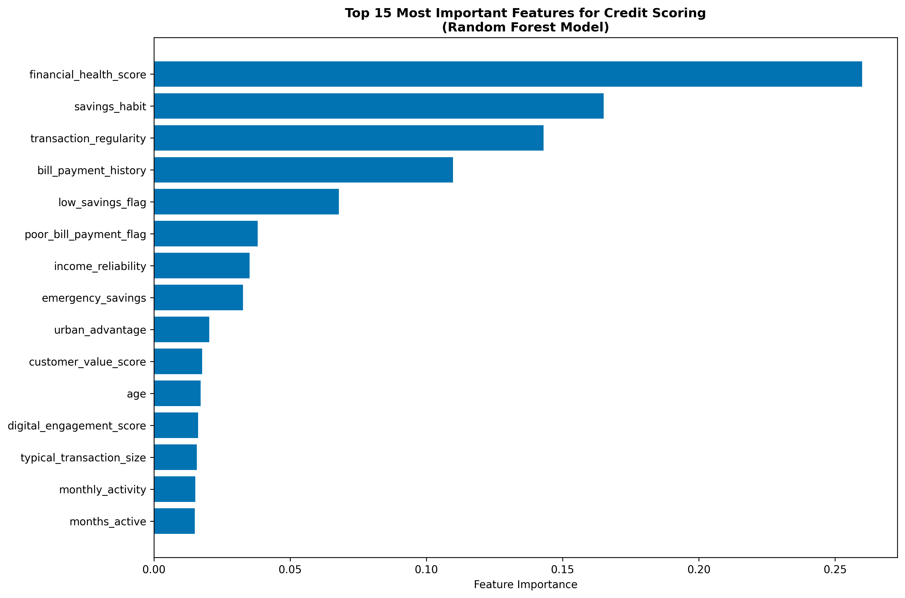
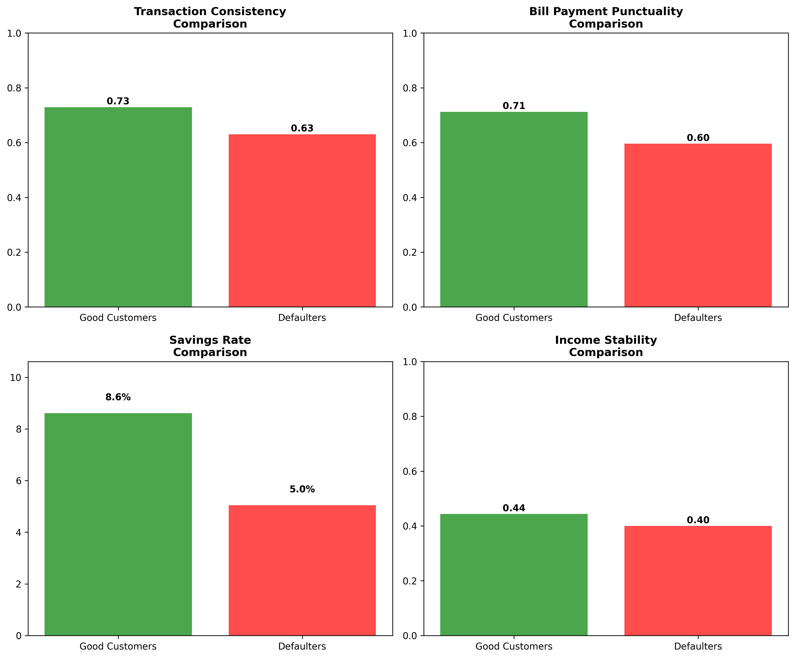

Projects
Click any image to enlarge it.
Digitalizing IGF Mobilization at Tema Metropolitan Assembly
Ghana's Local Governance Act 2016 (Act 936) mandates Metropolitan, Municipal, and District Assemblies to mobilize Internally Generated Funds (IGFs). This project analyzes Tema Metropolitan Assembly's IGF collection data (2016–2023) and provides a digitalization roadmap to automate the entire revenue lifecycle.
The problem
Manual processes (paper billing, physical cash collection, manual reconciliation, limited audit trails) cause revenue leakages, low compliance, and high enforcement costs.
Key findings
- Peak collection came in 2022, with property rates contributing 51% of the revenue pool.
- TMA exceeded its target by 4% in 2021, then fell 3% relative to targets in 2022–2023.
- The 2017 POS device rollout did not solve the core problem: collectors still handled physical cash.
- Coefficient of Variation analysis phases the rollout: Fees (9%), Licenses (10%), Property Rates (16%), and Land (19%) first; then Fines and Rent; then Basic Rates, Investment, and Miscellaneous.
Proposed solution
- Digital taxpayer database with unique IDs, and automated SMS e-billing.
- Multi-channel payments (mobile money, USSD, POS, bank transfers) with instant receipts.
- Real-time dashboards by line item, area, and collector, plus automated defaulter reminders.



Ghana Treasury Market Analysis (2021–2025)
End-to-end analysis of Bank of Ghana Treasury Bill issuances from January 2021 to September 2025, using Python for data engineering and Power BI for financial modeling to uncover trends in interest rates, yield spreads, and market volatility.
Key findings
- Yield hierarchy: the 364-Day Bill was the most lucrative short-term instrument (average 25.1%), with a 3.7% premium over 3-month holdings.
- Market stress: the yield spread peaked at 4.5 in 2023 and cooled to 1.8 in 2025.
- December effect: December offered the highest average rates (27.40%), with yields ramping up through Q4.


Ghana Stock Exchange Performance & Risk Assessment (2021–2023)
An evaluation of the Ghana Stock Exchange using trading data from 2021–2023, assessing stock quality through risk-adjusted returns, hidden trading costs (liquidity), and the reliability of price movements.
Key findings
- Risk-adjusted return: Benso Oil Palm Plantation (BOPP) was the most efficient stock (Sharpe Ratio +3.06), followed by Enterprise Group (+2.69).
- Liquidity: Trust Bank Limited (The Gambia) was the most liquid (6.03% average spread); Digicut Production was functionally untradeable (113.30%).
- Trading conviction: Trust Bank Limited showed the most reliable price trends (volume-price correlation +0.96).

Credit Scoring System for Financial Inclusion in Ghana's Informal Sector
An alternative credit scoring model for Ghana's informal sector, where traditional credit history is unavailable, enabling financial inclusion while keeping risk at sustainable levels.
Technical solution
- Machine learning model in Python (scikit-learn) for credit risk assessment.
- Analysis of mobile money transaction patterns and payment history.
- Risk assessment algorithms based on behavioral data.
- Interactive Streamlit dashboard for model deployment, with data validation and preprocessing pipelines.


